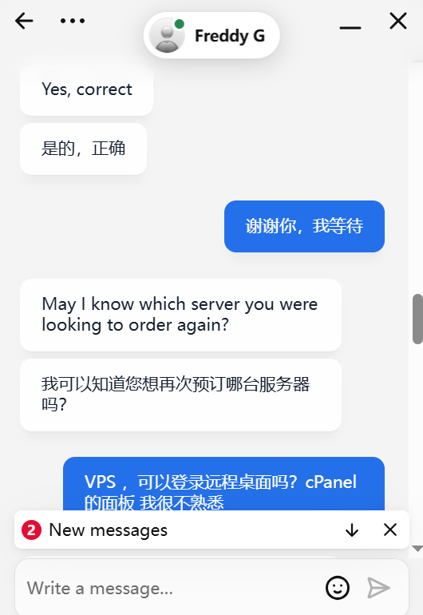

从不愉快到满意：去中心化的力量
昨天，我还在为国内云主机的慢响应和糟糕的服务体验烦恼。而今天，接触到"马赛克Team"后，我感受到了完全不同的体验——高效、透明、去中心化支付，让一切变得更加流畅。
他们的中文支持服务，让我可以无障碍地沟通。去中心化的支付方式，打破了传统支付的繁琐，让交易更自由、快捷。
2025.4.29 日志 作者：Epochfuture Team

昨天，我还在为国内云主机的慢响应和糟糕的服务体验烦恼。而今天，接触到"马赛克Team"后，我感受到了完全不同的体验——高效、透明、去中心化支付，让一切变得更加流畅。
他们的中文支持服务，让我可以无障碍地沟通。去中心化的支付方式，打破了传统支付的繁琐，让交易更自由、快捷。